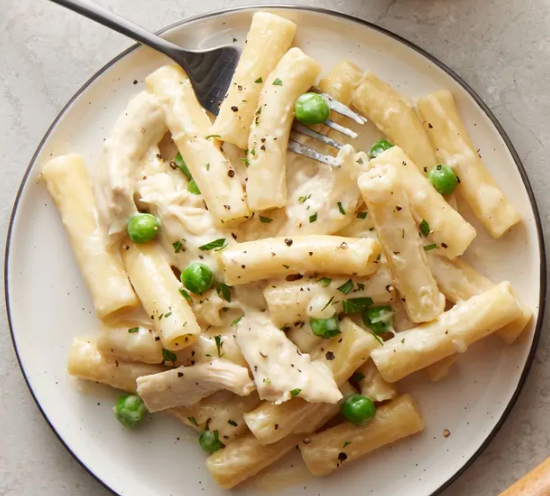

Chicken Alfredo

Description
A scratch dinner done in 40 minutes using just one pan? It's
not too good to be true—but it is so very good! A classic
homemade Alfredo sauce gets tossed with cooked chicken, peas and ziti pasta for an
impressive meal that you can make on the fly.
Ingredients:
- 2 tablespoons butter
- 3 cups Progresso™ chicken broth (from 32-oz carton)
- 8 oz uncooked ziti pasta (2 1/2 cups)
- 1/4 teaspoon salt
- 1/4 teaspoon pepper
- 1 1/2 cups heavy whipping cream
- 1 cup grated Parmesan cheese
- 2 cups shredded deli rotisserie chicken
- 3/4 cup frozen sweet peas
- Chopped Italian (flat-leaf) parsley, if desired
Directions:
- In 12-inch nonstick skillet, heat butter over medium heat until melted; add garlic.
Cook and stir constantly about 1 minute or until fragrant.
Add broth, pasta, salt and pepper; heat to boiling. Reduce heat to medium.
Cook uncovered 12 to 14 minutes, stirring occasionally,
until pasta is al dente and most of liquid is absorbed.
- Stir in whipping cream and Parmesan cheese; cook over medium-high heat 2 to 3 minutes,
stirring frequently, until bubbly. Stir in chicken and frozen sweet peas; cook 2 to 3 minutes,
stirring occasionally, until thoroughly heated through.
- Let stand 5 minutes before serving. Garnish with parsley.
Credits:
All credit goes to bettycrocker
Home